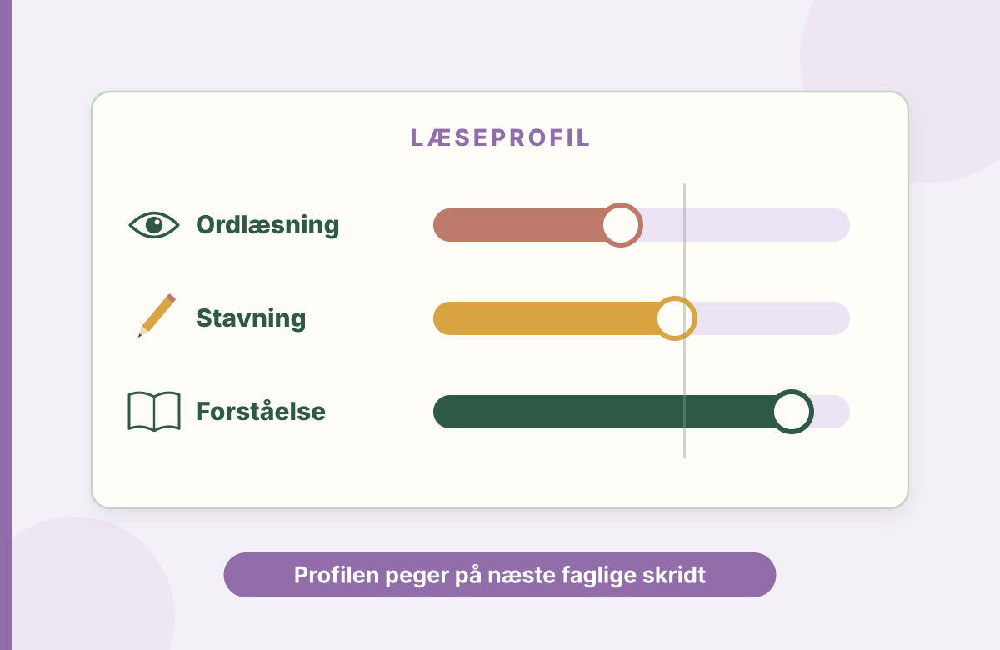
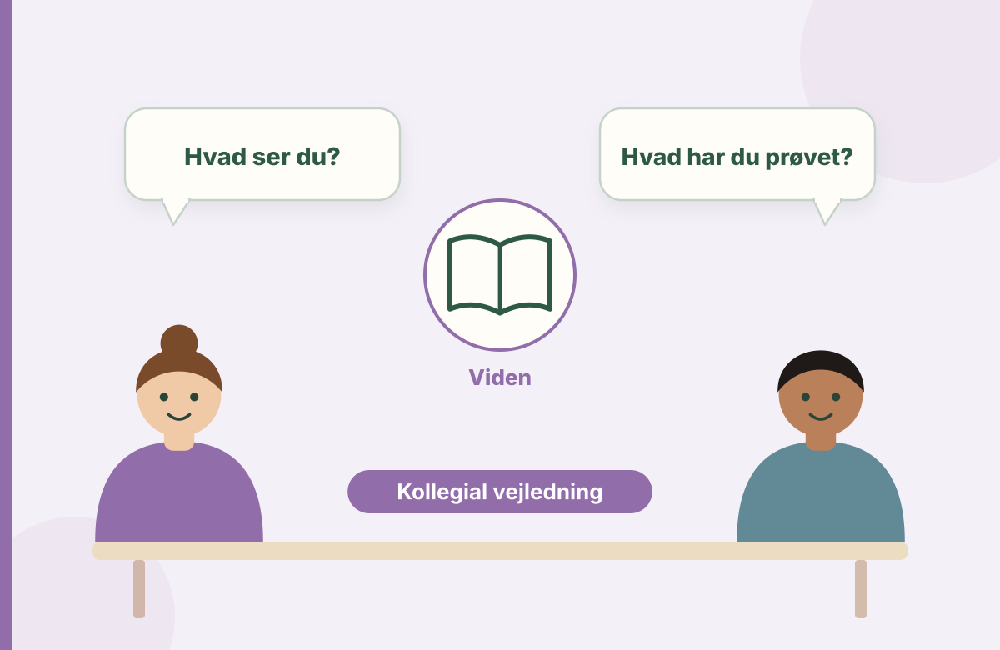

Fortolk data
Sammenhold testresultater, elevens arbejde og undervisningens rammer.
Din opgave er både at forstå elevens læseprofil og at bidrage til, at undervisningen udvikles sammen med kolleger, elever og forældre.

Sammenhold testresultater, elevens arbejde og undervisningens rammer.
Omsæt en fælles problemstilling til en realistisk prøvehandling.
Beskriv på forhånd, hvad I vil lægge mærke til, og hvordan indsatsen vurderes.
Begynd med de mest relevante guider. Arbejd med én case, og tag derefter en afprøvet aktivitet med til dit studie eller din skole.
En test kan give viden om elevens behov. Sammen med observationer og elevens perspektiv giver den grundlag for en undervisningsplan.
Læs guideLæsevanskeligheder kan have flere årsager. Undersøg ordafkodning, sprogforståelse og samspillet mellem dem.
Læs guideLæsevejlederen er både faglig ressourceperson, sparringspartner og mulig drivkraft i skolens udvikling af læseundervisningen.
Læs guideGod læsestøtte kræver en fælles forståelse af målet, men rollerne er forskellige.
Læs guideElever, der ofte møder nederlag ved læsning, kan begynde at undgå de situationer, der udstiller deres vanskeligheder.
Læs guideEn god værktøjskasse er lille nok til at blive brugt og fleksibel nok til at passe til den konkrete elev.
Læs guidePlanlæg en kort vejledningssamtale. Afklar ønsket læringsmål, to observationer, én undervisningsændring og tidspunktet for evaluering.
Find materialer til opgaven Lyt til en praksislektion
Brug et konkret eksempel, og undersøg, hvordan du begrunder dine valg i både opgaven og undervisningen.
Træn undersøgende vejledningsspørgsmål og prioriteret faglig feedback.
Læs guidenBrug test og teori til at analysere, hvad materialet betyder for dine didaktiske valg.
Læs guidenPlanlæg læringsmål, observation og kollegial opfølgning.
Læs guidenNår du vælger forskning til en studieopgave eller et vejledningsforløb, må du se på, hvem der er undersøgt, og hvad resultaterne faktisk viser. Først derefter giver det mening at diskutere, hvad du kan bruge dem til på din skole.
Læs guiden om kritisk læsningSe hvordan observationer og elevens perspektiv kan kvalificere vejledningen.
Øv, hvordan en ressourceperson undersøger en deltagelsesbarriere og følger op i samarbejde med læreren.
Brug en fiktiv case til at undersøge, hvad der sker, når en læseindsats skal fortsætte i klassens hverdag. Afgræns en prøvehandling, og planlæg, hvad der skal følges op på.
Arbejd med den nye studieopgaveArbejd med afkodning, forståelse, alternative forklaringer og begrundet undervisning.